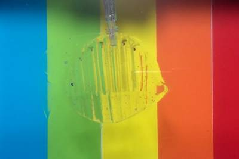
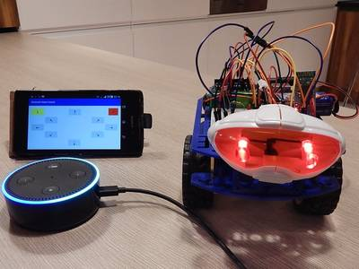

2017-02-02 - Nº 92

Editorial
Esta é a Newsletter Nº 92 que se apresenta com o mesmo formato que as anteriores. Se gostar da Newsletter partilhe-a!
Todas as Newsletters encontram-se indexadas no link.
Esta Newsletter tem os seguintes tópicos:
Faz hoje anos que nascia em 1522 Lodovico Ferrari. Este matemático italiano foi responsável pela solução de equações quártica ou de 4º grau.
Esta semana a NASA publicou fotografias absolutamente fascinantes dos aneis de saturno, obtidas pela sonda espacial Cassini. Esta semana também, começaram a circular noticias de que a Apple está a trabalhar no desenvolvimento de co-processadores ARM para a sua linha computadores MacBook. A Olimex, empresa Bulgara que desenvolve diversas placas e ferramentas para o mercado de componentes embebidos apresentou um projeto de um portatil open source baseado num Allwinner A64 64-bit Cortex-A53 processor com 4 cores, 1 GB de RAM, 4GB de memória Flash e um ecran de 11.6" 1366x768. Este tem a particularidade de vir em Kit.
Na Newsletter desta semana apresentamos diversos projetos de maker assim como alguns modelos 3D que poderão ser úteis. É apresentada também a revista Hello World nº 1 e a revista newelectronics de 24 de Janeiro.
 João Alves ([email protected])
João Alves ([email protected])
O conteúdo da Newsletter encontra-se sob a licença  Creative Commons Attribution-NonCommercial-ShareAlike 4.0 International License.
Creative Commons Attribution-NonCommercial-ShareAlike 4.0 International License.
Novidades da Semana ^
Close Views Show Saturn's Rings in Unprecedented Detail
"Newly released images showcase the incredible closeness with which NASA's Cassini spacecraft, now in its "Ring-Grazing" orbits phase, is observing Saturn's dazzling rings of icy debris. The views are some of the closest-ever images of the outer parts of the main rings, giving scientists an eagerly awaited opportunity to observe features with names like "straw" and "propellers." Although Cassini saw these features earlier in the mission, the spacecraft’s current, special orbits are now providing opportunities to see them in greater detail. The new images resolve details as small as 0.3 miles (550 meters), which is on the scale of Earth's tallest buildings." [...]
Report: Apple is kind-of-sort-of working on more ARM chips for its Macs
"Apple is working on more ARM co-processors for future MacBooks, at least if a new report from Bloomberg is to be believed. The company is allegedly developing a chip codenamed "T310" that could be used to handle macOS' "Power Nap" functionality and other low-power features. The chip would sit alongside an Intel processor that would still do all the heavy lifting when the computer was awake, much like the Apple T1 chip that powers the new MacBook Pros' Touch Bar. The T310 would be slightly more capable and more deeply integrated into the system than the T1, since it would be allowed to use the computers' Wi-Fi adapters and access RAM and storage. But as described, the chip would still be filling a niche role rather than doing any major processing. While Bloomberg notes that Apple has "no near-term plans to completely abandon Intel chips," the report frames Apple's new chip as the next step down a road toward "Intel independence." This could eventually lead to Macs that are powered by Apple's own A-series processors rather than standard x86 PC processors; Intel's chip development has slowed significantly in recent years, and the company's roadmap doesn't look as rosy as it did back in 2006 when Apple originally switched away from the PowerPC architecture." [...]
TERES I Do It Yourself Open Source Hardware and Software Hacker’s friendly laptop is complete
"We are proud to announce that our TERES I laptop is complete. We have assembled units and now working on the software. The building instructions are uploaded here and you can see that it’s pretty easy to build one yourself. This weekend in Bruxell at FOSDEM we will have table in Hall AW where every one could touch and play with the very first built laptops." [...]
Outras Notícias
- D-Wave Announces D-Wave 2000Q Quantum Computer and First System Order
- World’s most powerful wind turbine once again smashes 24 hour power generation record as 9 MW wind turbine is launched
- mbed OS 5.3.4 released
- Vega: AMD’s New Graphics Architecture for Virtually Unlimited Workloads
Ciência e Tecnologia ^
For This Metal, Electricity Flows, But Not the Heat
"There’s a known rule-breaker among materials, and a new discovery by an international team of scientists adds more evidence to back up the metal’s nonconformist reputation. According to a new study led by scientists at the Department of Energy’s Lawrence Berkeley National Laboratory (Berkeley Lab) and at the University of California, Berkeley, electrons in vanadium dioxide can conduct electricity without conducting heat. The findings, to be published in the Jan. 27 issue of the journal Science, could lead to a wide range of applications, such as thermoelectric systems that convert waste heat from engines and appliances into electricity. For most metals, the relationship between electrical and thermal conductivity is governed by the Wiedemann-Franz Law. Simply put, the law states that good conductors of electricity are also good conductors of heat. That is not the case for metallic vanadium dioxide, a material already noted for its unusual ability to switch from an insulator to a metal when it reaches a balmy 67 degrees Celsius, or 152 degrees Fahrenheit." [...]
The world’s first heat-driven transistor
"Dan Zhao and Simone Fabiano at the Laboratory of Organic Electronics, Linköping University, have created a thermoelectric organic transistor. A temperature rise of a single degree is sufficient to cause a detectable current modulation in the transistor. The results have now been published in Nature Communications. “We are the first in the world to present a logic circuit, in this case a transistor, that is controlled by a heat signal instead of an electrical signal,” states Professor Xavier Crispin of the Laboratory of Organic Electronics, Linköping University. The heat-driven transistor opens the possibility of many new applications such as detecting small temperature differences, and using functional medical dressings in which the healing process can be monitored. It is also possible to produce circuits controlled by the heat present in infrared light, for use in heat cameras and other applications. The high sensitivity to heat, 100 times greater than traditional thermoelectric materials, means that a single connector from the heat-sensitive electrolyte, which acts as sensor, to the transistor circuit is sufficient. One sensor can be combined with one transistor to create a “smart pixel”." [...]
Carnegie Mellon artificial intelligence beats top poker pros
"Libratus, an artificial intelligence developed by Carnegie Mellon University, made history by defeating four of the world’s best professional poker players in a marathon 20-day poker competition, called “Brains Vs. Artificial Intelligence: Upping the Ante” at Rivers Casino in Pittsburgh. Once the last of 120,000 hands of Heads-up, No-Limit Texas Hold’em were played on Jan. 30, Libratus led the pros by a collective $1,766,250 in chips. The developers of Libratus — Tuomas Sandholm, professor of computer science, and Noam Brown, a Ph.D. student in computer science — said the sizable victory is statistically significant and not simply a matter of luck." [...]
A New Approach to 3D Holographic Displays Greatly Improves the Image Quality
"With the addition of holographic diffusers or frosted glasses to wavefront modulators, KAIST researchers offer a simple and practical solution to significantly enhance the performance of 3D dynamic holographic displays by 2,600 times. The potential applications of three-dimensional (3D) digital holograms are enormous. In addition to arts and entertainment, various fields including biomedical imaging, scientific visualization, engineering design, and displays could benefit from this technology. For example, creating full-sized organs for 3D analysis by doctors could be helpful, but it remained a challenge owing to the limitation of hologram-generation techniques. A research team led by Professor YongKeun Park of the Physics Department at the Korea Advanced Institute of Science and Technology (KAIST) has come up with a solution and developed a 3D holographic display that performs more than 2,600 times better than existing 3D holographic displays. This study is expected to improve the limited size and viewing angle of 3D images, which were a major problem of the current holographic displays. The study was published online in Nature Photonics on January 23, 2017. 3D holograms, which often appear in science fiction films, are a familiar technology to the public, but holograms in movies are created with computer graphic effects. Methods for creating true 3D holograms are still being studied in the laboratory. For example, due to the difficulty of generating real 3D images, recent virtual reality (VR) and augmented reality (AR) devices project two different two-dimensional (2D) images onto a viewer to induce optical illusions. To create a 3D hologram that can be viewed without special equipment such as 3D glasses, the wavefront of light must be controlled using wavefront modulators such as spatial light modulators (SLMs) and deformable mirrors (DMs). A wavefront modulator is an optical manipulation device that can control the direction of light propagation." [...]

Transparent, gel-based robots can catch and release live fish
"Engineers at MIT have fabricated transparent, gel-based robots that move when water is pumped in and out of them. The bots can perform a number of fast, forceful tasks, including kicking a ball underwater, and grabbing and releasing a live fish. The robots are made entirely of hydrogel — a tough, rubbery, nearly transparent material that’s composed mostly of water. Each robot is an assemblage of hollow, precisely designed hydrogel structures, connected to rubbery tubes. When the researchers pump water into the hydrogel robots, the structures quickly inflate in orientations that enable the bots to curl up or stretch out. The team fashioned several hydrogel robots, including a finlike structure that flaps back and forth, an articulated appendage that makes kicking motions, and a soft, hand-shaped robot that can squeeze and relax." [...]
Optimizing code
"Compilers are programs that convert computer code written in high-level languages intelligible to humans into low-level instructions executable by machines. But there’s more than one way to implement a given computation, and modern compilers extensively analyze the code they process, trying to deduce the implementations that will maximize the efficiency of the resulting software. Code explicitly written to take advantage of parallel computing, however, usually loses the benefit of compilers’ optimization strategies. That’s because managing parallel execution requires a lot of extra code, and existing compilers add it before the optimizations occur. The optimizers aren’t sure how to interpret the new code, so they don’t try to improve its performance. At the Association for Computing Machinery’s Symposium on Principles and Practice of Parallel Programming next week, researchers from MIT’s Computer Science and Artificial Intelligence Laboratory will present a new variation on a popular open-source compiler that optimizes before adding the code necessary for parallel execution." [...]
Scientists Discover Potential Way to Make Graphene Superconducting
"Scientists at the Department of Energy’s SLAC National Accelerator Laboratory and Stanford University have discovered a potential way to make graphene – a single layer of carbon atoms with great promise for future electronics – superconducting, a state in which it would carry electricity with 100 percent efficiency. Researchers used a beam of intense ultraviolet light to look deep into the electronic structure of a material made of alternating layers of graphene and calcium. While it's been known for nearly a decade that this combined material is superconducting, the new study offers the first compelling evidence that the graphene layers are instrumental in this process, a discovery that could transform the engineering of materials for nanoscale electronic devices." [...]
AI Software Learns to Make AI Software
"Progress in artificial intelligence causes some people to worry that software will take jobs such as driving trucks away from humans. Now leading researchers are finding that they can make software that can learn to do one of the trickiest parts of their own jobs—the task of designing machine-learning software. In one experiment, researchers at the Google Brain artificial intelligence research group had software design a machine-learning system to take a test used to benchmark software that processes language. What it came up with surpassed previously published results from software designed by humans. In recent months several other groups have also reported progress on getting learning software to make learning software. They include researchers at the nonprofit research institute OpenAI (which was cofounded by Elon Musk), MIT, the University of California, Berkeley, and Google’s other artificial intelligence research group, DeepMind. If self-starting AI techniques become practical, they could increase the pace at which machine-learning software is implemented across the economy. Companies must currently pay a premium for machine-learning experts, who are in short supply." [...]
I Can See Clearly Now
"The days of wearing bifocals or constantly swapping out reading glasses might soon come to an end. A team led by University of Utah electrical and computer engineering professor Carlos Mastrangelo and doctoral student Nazmul Hasan has created “smart glasses” with liquid-based lenses that can automatically adjust the focus on what a person is seeing, whether it is far away or close up. Research on the adaptive lenses was published this week in a special edition of the journal, Optics Express. The paper was co-authored by U electrical and computer engineering associate professor Hanseup Kim and graduate researcher Aishwaryadev Banerjee. “Most people who get reading glasses have to put them on and take them off all the time,” says Mastrangelo, who also is a professor for USTAR, the Utah Science Technology and Research economic development initiative. “You don’t have to do that anymore. You put these on, and it’s always clear.” The human eye has a lens inside that adjusts the focal depth depending on what you look at. But as people age, the lens loses its ability to change focus, which is why many people ultimately require reading glasses or bifocals to see objects up close and regular eyeglasses to see far away, also known as farsightedness and nearsightedness, respectively." [...]
D-Wave upgrade: How scientists are using the world’s most controversial quantum compute
"The company that makes the world’s only commercially available quantum computers has released its biggest machine yet — and researchers are paying close attention. Named 2000Q after the number of quantum bits, or qubits, within its processor, the machine, made by D-Wave of Burnaby, Canada, has almost twice as many qubits as its predecessor. Many researchers remain sceptical about the long-term potential of such machines, whose approach differs from that of other nascent quantum computers. But others are already booking time on D-Wave’s computers to explore challenges from machine learning to cybersecurity. Moreover, improvements to 2000Q, the company’s fourth-generation machine, are largely a result of researchers’ feedback." [...]
First step towards photonic quantum network
"Quantum technology based on light (photons) is called quantum photonics, while electronics is based on electrons. Photons (light particles) and electrons behave differently at the quantum level. A quantum entity is the smallest unit in the microscopic world. For example, photons are the fundamental constituent of light and electrons of electric current. Electrons are so-called fermions and can easily be isolated to conduct current one electron at a time. In contrast photons are bosons, which prefer to bunch together. But since information for quantum communication based on photonics is encoded in a single photon, it is necessary to emit and send them one at a time. Information based on photons has great advantages; photons interact only very weakly with the environment – unlike electrons, so photons do not lose much energy along the way and can therefore be sent over long distances. Photons are therefore very well suited for carrying and distributing information and a quantum network based on photons will be able to encode much more information than is possible with current computer technology and the information could not be intercepted en route. " [...]
Engineers Build Robot Drone That Mimics Bat Flight
"Bats have long captured the imaginations of scientists and engineers with their unrivaled agility, but their complex wing motions pose significant technological challenges for those seeking to recreate their flight in a robot. The key flight mechanisms of bats now have been recreated with unprecedented fidelity in the Bat Bot—a self-contained robotic bat with soft, articulated wings, developed by researchers at Caltech and the University of Illinois at Urbana-Champaign (UIUC). "This robot design will help us build safer and more efficient flying robots, and also give us more insight into the way bats fly," says Soon-Jo Chung, associate professor of aerospace and Bren Scholar in the Division of Engineering and Applied Science at Caltech, and Jet Propulsion Laboratory research scientist. (Caltech manages JPL for NASA.)" [...]
Researchers Flip Script for Li-Ion Electrolytes to Simulate Better Batteries
"Ever since Italian physicist Alessandro Volta invented the first battery out of a stack of copper and zinc disks separated by moistened cardboard, scientists have been searching for better battery materials. Lithium-ion batteries, which are lighter, longer-lasting, and functional under a wider range of temperatures than standard batteries, power everything from cell phones to aircraft carriers to electric cars. Their ubiquitous use makes their stability, efficiency, and safety important for businesses and consumers alike. One of the main challenges researchers face in dealing with battery components, however, is finding novel, nonflammable materials for the electrolyte. The electrolyte is the crucial battery component that shuttles lithium ions during charging and discharging, transferring the energy that enables a battery’s use. Now, scientists are looking for electrolytes that are not only stable but also conductive to lithium ions, a property that lithium-ion batteries require to maintain efficiency during charge cycles." [...]
Novel Liquid Crystal Could Triple Sharpness of Today’s Televisions
"An international team of researchers has developed a new blue-phase liquid crystal that could enable televisions, computer screens and other displays that pack more pixels into the same space while also reducing the power needed to run the device. The new liquid crystal is optimized for field-sequential color liquid crystal displays (LCDs), a promising technology for next-generation displays. “Today’s Apple Retina displays have a resolution density of about 500 pixels per inch,” said Shin-Tson Wu, who led the research team at the University of Central Florida’s College of Optics and Photonics (CREOL). “With our new technology, a resolution density of 1500 pixels per inch could be achieved on the same sized screen. This is especially attractive for virtual reality headsets or augmented reality technology, which must achieve high resolution in a small screen to look sharp when placed close to our eyes.” Although the first blue-phase LCD prototype was demonstrated by Samsung in 2008, the technology still hasn’t moved into production because of problems with high operation voltage and slow capacitor charging time. To tackle these problems, Wu’s research team worked with collaborators from liquid crystal manufacturer JNC Petrochemical Corporation in Japan and display manufacturer AU Optronics Corporation in Taiwan." [...]
Modelos 3D ^
Com a disponibilidade de ferramentas que permitem dar azo a nossa imaginação na criação de peças 3D e espaços como o thingiverse para as publicar, esta rubrica apresenta alguns modelos selecionados que poderão ser úteis.
Ultimate PCB and IC Vise – Version 4 - Printable Vise for Small Electronics
"This 100% fully printable PCB and IC Vise project is my personal remix to the original “Fully Printable PCB Vise” by sneakypoo, with some mods made by other people, and a few of my own personal mods. This vise is PERFECT for holding Printed Circuit Boards (PCB), Integrated Circuit (IC) boards, and/or any other small electronics. The vise is useful for soldering or working with these circuit modules. The vise is 100% printable and should be easy to print on most 3D printers with a 200mm X 200mm print bed. Most importantly, this vise can be assembled without any glue or screws - you just snap the vise together and it is ready to use! I should also mention that this vise is NOT designed to grip, compress, or squeeze an object with any real amount of force – the vise is really only strong enough to hold the items in place while you’re working on them. Also, there are some important items to consider when building this vise, so be sure to see the notes I’ve provided below." [...]
Monster Mouth Headphone Holder - Clampable
"Headphone holder for attaching to a desk or shelf. It's a variation on my original design: http://www.thingiverse.com/thing:1644192 - but with a screw in clamp that allows you to adjust to a shelf with a max depth of 45mm." [...]
Customizable stereographic picture projector v3
"This thing adds a simple lamp chassis for my stereographic picture projector v2: http://www.thingiverse.com/thing:1922547 . The projector itself now has a thread to mount it to the chassis which can be easily replaced to experiment with different lamp designs without having to reprint the whole thing. The chassis that is generated allows to mount a LED with a cooler exactly at the north pole and create a simple lamp. I used an 1W and a 10W Highpower-LED." [...]
Documentação ^
A documentação é parte essencial do processo de aprendizagem e a Internet além de artigos interessantes de explorar também tem alguma documentação em formato PDF interessante de ler. Todos os links aqui apresentados são para conteúdo disponibilizado livremente pelo editor do livro.
newelectronics 24 January 2017
"New Electronics is a fortnightly magazine focusing on technological innovation, news and the latest developments in the electronics sector. Downloadable as a digital page turner or pdf file, or offered as a hard copy, the New Electronics magazine is available in a format to suit you." [...]
Hello World issue 1
"Hello World is a new 100-page magazine dedicated to helping educators bring computing and digital making to young people all over the world. Written by educators, for educators, Hello World is the perfect platform for the community to inspire ideas, share experiences, and learn from each other. The magazine, published three times per year, is available entirely free as a Creative Commons PDF download. You can also buy the magazine in print, or subscribe for a year. Thanks to the generous support of our sponsors, Hello World is available in print, free of charge, for UK-based educators." [...]
Projetos Maker ^
Diversos Projetos interessantes.
A Dirt Cheap F*** Awesome Interactive Led Table
"It's finally time I document this project I completed almost one year ago. I wanted to play with large led displays for a long time (who doesn't ?), and browsing on AliExpress, I once landed on one of those WS2811/WS2812 addressable led strips for less than 3 EUR/meter, and thought "Wow, that's dirt cheap !". I bought one meter just to play with it, and was surprised to see how fun it was (easy to control and quite powerful), and I started to think about wiring them in a matrix shape. Most of the libraries already support custom width and height, so that's pretty cool." [...]
How to Make GRBL + CNC V3 Shield Based Mini CNC Machine From Scrap DVD Drive
"This CNC is based on GRBL0.9 Firmware and CNC V3 shield GRBL is Hacked for Z-axis Servo. CNC Shield & GRBL combinly works very preciselyIt is loaded with very useful functions like Hard limit, Soft limit, Homing, etc" [...]
Portable Mini Timelapse Camera
"For this week’s project, I built a portable mini camera and In this guide, I’ll show you I how I built it. I think this is great for anyone looking to build a DIY project with a low cost camera. I’m using this to create time lapse videos but you could use it for all sorts of photo based projects. The mini spy camera module has an integrated driver and is really easy to use without an Arduino or Raspberry Pi. The camera sensor can take 1280x960 photos and captures video at 480p. it's not an HD camera but it’s pretty decent for small projects. The module uses a microSD card to store data and it has a maximum support of 32GB." [...]
Simple RaspberryPi-based Autonomous Car
"This reference platform improves on the basic FormulaPi model in three ways: Uses easily available chassis and motor driver boards; Uses a RaspberryPi 3, which has WiFI built-in and enough computing power to allow use of VNC remote access to monitor progress without slowing to a crawl; Uses a cloud robotics model to do most processing on a laptop by streaming the video and commands over WiFI" [...]
PSU Burner
"What does one do when designing a power supply? Well, build a power supply tester, of course. One of the simplest things to build is a constant current load. This will allow for testing of the endurance of the power supply, as most of the designs out there are using slow components. However, I wanted to make a better one: one that I could hook up to my Analog Discovery and generate a test waveform to be able to connect and disconnect the load fast. This is a weekend project, so all parts are not the best for the purpose, just what I had around." [...]
Raspberry-Pi Home Heating Controller
"Have you ever wanted to remotely control your home heating and hot water from anywhere, but did not want to pay over £200 for a commercial system ? Using off-the-shelf hardware and shareware code, you can build your own DIY controller for less than £50." [...]
PVC Submersible
"In this instructable we will be building a submersible. When finished you should have a submersible with motors and electronics to control it. It should be able to go up and down and turn left and right in a pool." [...]
BTS- Lynx 42 Submersible
"This is an instructable on how to make a PVC waterproof submarine! This is a project that can teach you basic electronics and soldering. Have fun!" [...]
World's Smallest IoT Project
"IoT has been trending since long in the field of electronics and communications. Many projects, products are daily made under IoT. Even I made several projects under this topic. But this is the limit of how the IoT project can be shrinked in size without compromising it’s ability to work. This time I’m presenting you the smallest project of mine or the smallest project ever made in IoT field. There may be products which are way more smaller than my project, but I bet an IoT project can’t be smaller than the one which I have made. This is the simplest IoT project, IoT button with rechargeable battery having dimension of 4 x 2 x 1 cm. So let’s see how to make this.And their is also a surprise giveaway in the end." [...]
CarontePass: Open Access Control for Collaborative Spaces
"Currently we use CarontePass to access Kreitek, our Hackerspace from Tenerife (Spain) This carontepass is an improvement of the previous project (v1) It is difficult to create a makerspace (or other collaborative space) but once you have the tools you want them to be used as much as possible. They also have users who want to use them. We only need one thing, that can be used on a schedule. But here we have a big problem, if we have 30 users for example... Do we have to make 30 copies of door keys? What happens if one gets those keys lost? Did we change them all? It would be a serious security breach." [...]
LED Cube Pendant - Worlds Smallest LED Cube
"It all started when I stumbled across Harifun'stiny LED cube almost 10 month ago. He has done a great work on miniaturizing Ashler Glick's innovative charliecube, which uses charlieplexing to control a 4x4x4 RGB LED cube with nothing but 16 IOs - no driver circuitry needed. Despite being the smallest cube to that day, I was aware that there are even smaller LEDs, so - technically - it should be possible to shrink it even further, right?! But the more important question is: What is the smallest thing that we makers can build, at a reasonable budget and with humble tools? This project was a quest to figure it out! The final result is so small that it could be worn with a necklace, but I use mine as a key fob. While most of this project is fairly simple, everything soldering related is a tough. It's not impossible, but definitely not a beginners project either. Are you up for the challange? Let's get started!" [...]
A Simple LED Cube 2X2X2
"This LED cube was developed using 8 green LEDs and Arduino Uno microcontroller while it only needed two resistors for managing the two planes done of 4 LEDs each." [...]
Mystery Box: Crypto Countdown Case
"Picture this: You are a Cold War-era spymaster, stationed in West Germany. One of your operatives has risked life and limb to get her hands on this mysterious case. You inspect and then carefully open it to be greeted by an array of toggle switches, a countdown timer, and a power switch. Disarm it, and you'll have your hands on the vital launch code for a captured missile. Fail, and, well, it's best not to consider failure..." [...]
Renegade-i (Programmable IC Tester That Feels Like the Real Thing)
"Have you ever dreamt of having your own IC tester at home? Not just a gadget that can test IC, but a “programmable” machine that feels like one of the flagship product of the biggest players in the semicon test industry, such as Teradyne, Advantest, Verigy or Nextest. Advances in the technology of FPGA enabled manufacturers to pack huge amount of elements in a single chip at affordable prices. Combined this with the current trend in electronics toward modularization, and what you get is a cheap, “very programmable” IC tester that you can build at home using tools in your kitchen. And the best part is that it “feels like the real thing” from Teradyne or Nextest. That’s the million dollar question. The steady progress in electronics technology and the contributions of those little manufacturers who produce nice useful modules, empowered the innovative hobbyists to make their own cute useful gadgets. In fact, a skillful hobbyist could even build his own cellphone from off-the-shelf components, which is impossible for the hobbyist to do 12 years back. The same progress in electronics could trickle down to the semicon testers. I was waiting, that someday I can buy my own portable tester from ebay, but looks like it is not happening. Nobody is making it happen. Someone should make it happen. So, here I am. Starting to get the ball rolling. Inspiring someone out there to see how cool it is, and himself make a better version. And then someone else design an even better version. Each version getting us one step closer towards SKYNET. Anyway, I was hoping that I could become the next “Steve Wozniak” someday." [...]
ATtiny Dev Board / Tinyduino
"This is an ATtiny Dev Board. Designed for the ATtiny line of microcontollers from atmel. Its made to be small, simple to build and easy to use. This board has following features: Female headers for easy prototyping; Build-in 1A 5V voltage regulator; 8-Pin socket to change out microcontrollers; ISP-Header for programming; Power selcet switch, using voltage regulator or the USB power of the programmer; Reset button; Power on LED." [...]
PI Zero Mini Robot
"For this project the aim was to make a very small desktop companion robot, but one packed with functionality, . I have been using the Raspberry PI Zero in a number of my bots. I also wanted to add a Camera, Ultrasonic sensor for distance measurements and also needing a combination of motors and servos to control a gripper, head and drive the track based chassis I wanted. This instructable will only contain details of the build and what I used and how I constructed it. The programming side of things has been tested just using Python to initially test parts I had added, and ensure the gripper, head and drive worked correctly." [...]
Build Your Own LED Photography Ring Light
"This project uses an RGBW LED ring, a small Arduino-compatible board, and a potentiometer to make a cool and adjustable LED ring light. Depending on your camera, you may need to adjust the size of the filter and LED ring to best suit your needs!" [...]
Remapcro: A Hardware Keyboard Macro Recorder
"I posted once recently about the prototype of this project, but as of today I've finished the first real one. The name Remapcro is a portmanteau of remap and macro, because that's what it does. It's an array of extra keys onto which macros can be stored, and then replayed at a touch. It works by sitting between your keyboard and computer. Normally key presses are passed straight through, but when recording a macro they are stored and then later replayed. I made a handful of small errors along the way, but none were fatal. The worst is in the picture on the right, above. There are two PCBs to hold the electronics. On top one holds the key switches and the diodes which help make the keyboard matrix easy to read and error free. Then a second smaller one, holding the "smarts". There are a couple connections between the two of them, and the cross-wise one (top to bottom, at the edge of the smaller board) is off by one space. I ended up mounting the smaller board "upside down" and even though I thought I had the connector perfectly centered, it was off by a tenth of an inch. Thanks to the size of the key caps, there was already some extra room in the case I designed, and cutting a bit of the corner off the smaller board helped squeeze everything in anyway. There's also one LED tucked into the top-left key (bottom left in the left picture above). It's actually three LEDs (red, green, and blue). And specially designed to fit exactly into these key caps. I could only find it in a lot of 50 from China, and I was too impatient to wait for it to arrive (and carefully check my design against it) before I ordered the PCBs. I ended up needing to put it in backwards, trim off a bit of the bulge that now sticks out rather than into the slot it's designed for, and re-wire the connections a bit." [...]
Object avoidance Microbit Robot using the Kitronik motor controller
"Having already experimented with creating a robot using a cheap motor driver board, I decided to look at the one provided by Kitronik, I liked the look of it as it came with easy to use screw terminals to attach wires and had 4 inputs by default. The nicest thing is that if you get the v2 board (second version) it also has an expanded section which allows you to solder a 20 pin header onto it and use the full range of extended Microbit ports." [...]
Create an Access Control System with an 4x3 Keypad & RFID-RC522!
"Make your own Access Control System by using a RFID-RC522 mifare reader in combination with an 4x3 membrane keypad!" [...]
Arduino 3D Printed Can Robot (one More Object Avoiding Robot
"In this "how to" guide I will show you how to make your own 3D printed Can Robot with the Arduino UNO micro-controller. This is a remake of the Attiny Canbot that I found at Thingiverse.com by Wingman94 (link here) . I made my own circuit with ATmega328 IC and I add a buzzer to make a beep tone every time that robot finds an object in front of it. I didn't include the IR remote control function. This little robot is powered by one 3.7V 500mAh rechargeable battery and can be charged from the builtin charging circuit ." [...]
Mini Digital Barometric Altimeter
"I found on Ebay very nice, small 12v 23A battery holders for PCB mounting style and decided to fit the SMALL DIGITAL BAROMETRIC ALTIMETER just on the back of the holder. So basically this is the same schematic as the SMALL DIGITAL BAROMETRIC ALTIMETER, however I moved some of the connections to different MCU pins because of PCB space limitations." [...]
Multiple LED Display Module
"One of the things I love working with the Arduino is LED monitors. It does not matter if they are with 7 segments or array of points and I've done many different designs using them. They are very interesting because there is a kind of "magic" in how they work. What you see on monitors are optical illusions, only possible due to Persistence of Vision (POV)! But the screens have a lot of pins to connect to the Arduino (or other microcontroller) and the best solution is to apply the techniques of data multiplexing to minimize the use of their ports. With this solution, each segment of LEDs will only be activated for a few moments (milliseconds), but this repetition in so many times per second (high frequency) creates the illusion of a complete image. This is the same effect of the video screen you are using now to read this page. Personally, the most interesting thing to do is to develop the logic, the code to display the correct information according to your hardware. A single prototype using displays of LED requires a lot of time to mount all the components on one board and includes many wire connections." [...]

Voice-Controlled Robot
"Build a voice-controlled robot in an hour. You will use Echo, Alexa, Heroku, Google Firebase, Android, and of course Arduino. Lots of fun!" [...]
IoT Gyroscope Bluetooth Cube
"This is a small tutorial for making a gyroscope cube that sends data through bluetooth. The data it sends is meant to be used with smart home devices or computer applications." [...]
That's all Folks!